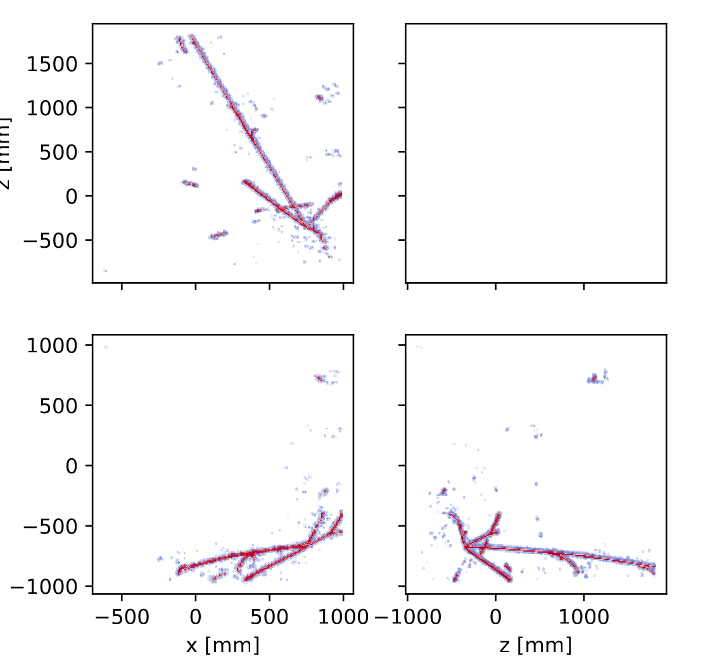
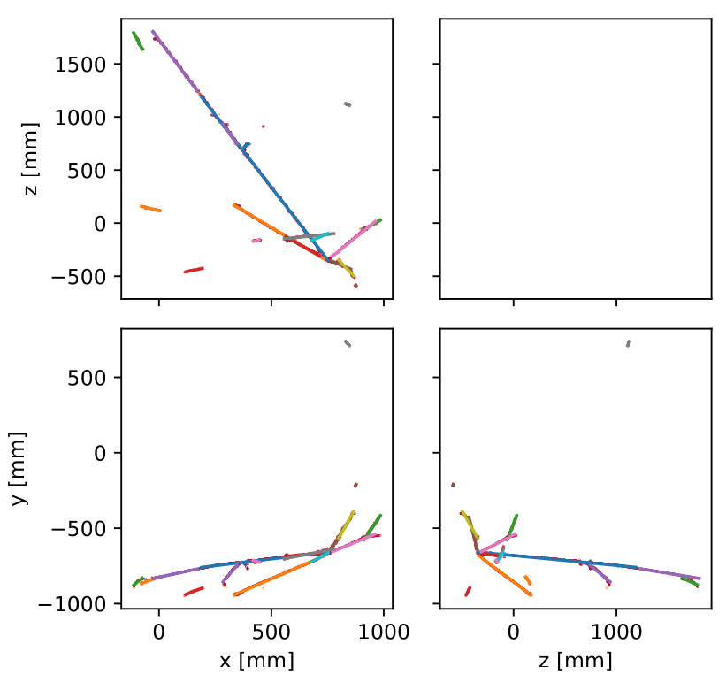

LiquidRecO
Reconstruction library for a 3D LiquidO detector.
Installation
Git clone this repository then can be installed using pip:
git clone git@github.com:ewanwm/LiquidRecO.git
pip install ./LiquidRecO/
Usage
After installing, you can use the liquidreco app to run the reconstruction:
liquidreco -i <file containing hits>
This app has many options and is highly configurable. To see the varius options you can do
liquidreco -h
Example
Initial fiber hits: 
Are cleaned up and turned into 3 dimensional hits:

We can then use one of a number of different reconstruction algorithms on these. One of the most simple (and most effective) is a Hough transform (implemented in the reconstruction.HoughTransform class):

(Note that the hough transform is performed in 3D then the result projected back down to 2D for easier visualisation)